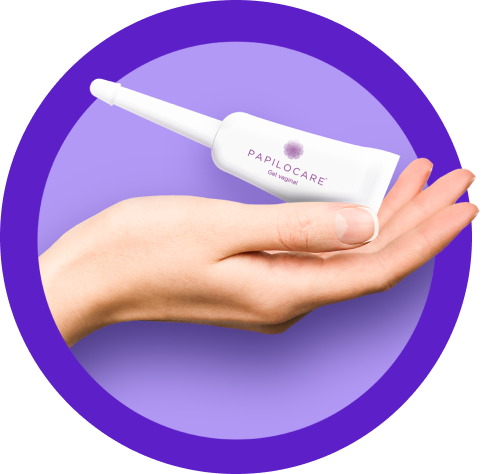

Modo de


Modo de
aplicación
Papilocare® se presenta en un tubo monodosis de 5 mL con aplicador individual. El contenido completo del tubo se debe aplicar una vez al día, de preferencia por la noche antes de acostarse (estando acostada de espaldas y con las piernas ligeramente dobladas), durante 21 días consecutivos y descansando durante el ciclo menstrual.1 Posteriormente, se debe usar Papilocare® en días alternos (un día sí y un día no) en función de la indicación del médico.1
Antes de la aplicación lávate bien las manos con jabón
Retira la tapa del aplicador.1
Introduce el aplicador lo más profundo posible en la vagina, vaciándolo mediante presión sobre el tubo aplicador para liberar el contenido.1
Retira el aplicador de la vagina sin dejar de presionar el tubo, para evitar que se succione el producto ya administrado.1